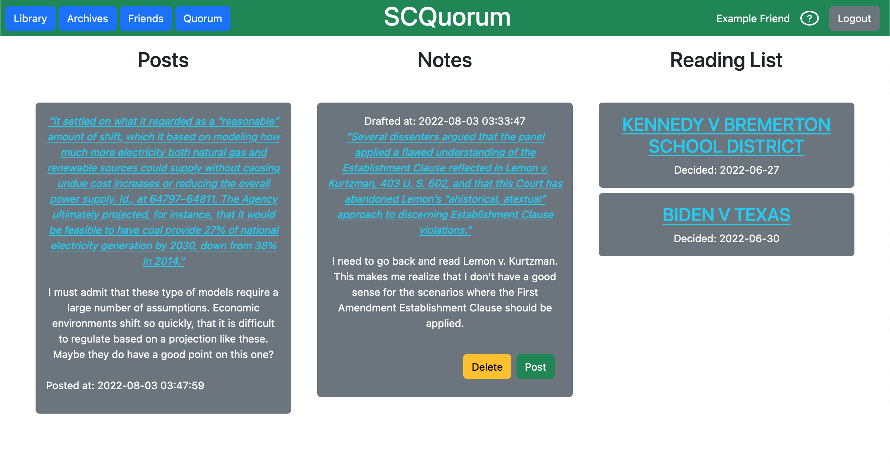
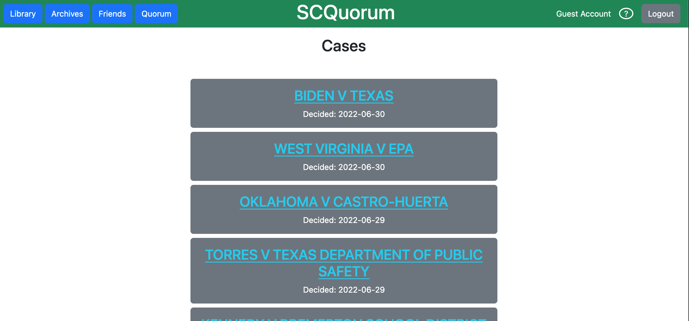
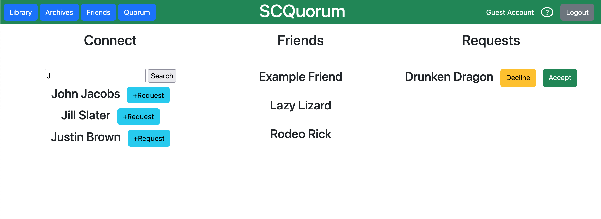
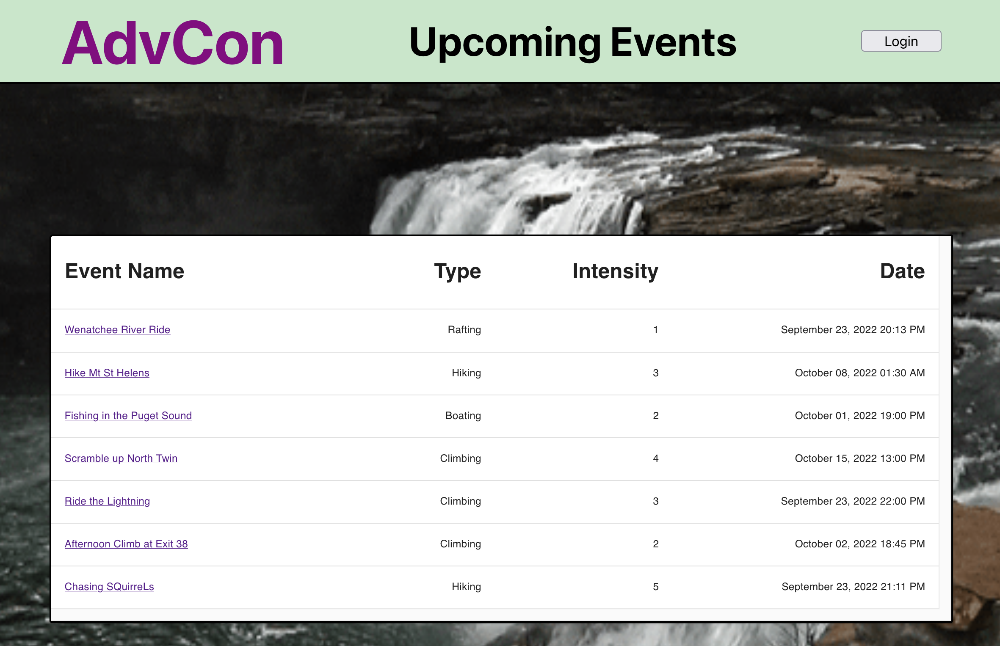
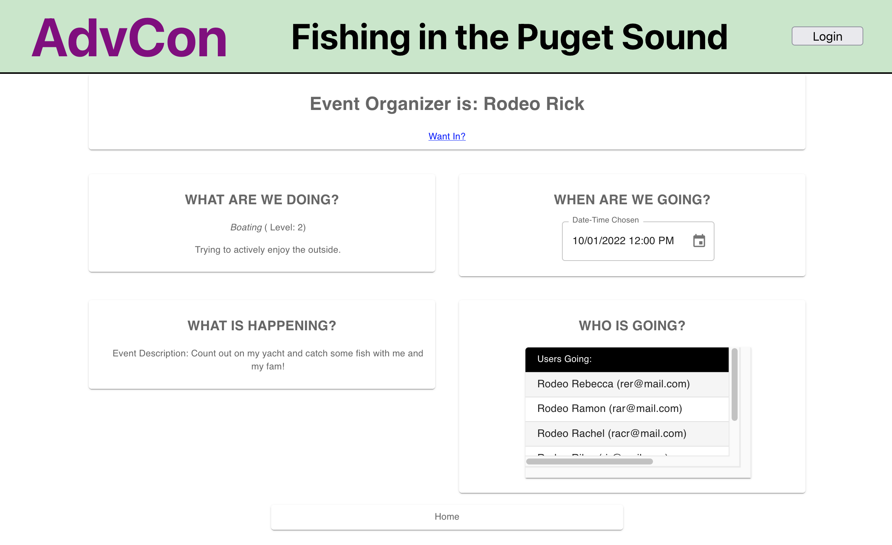
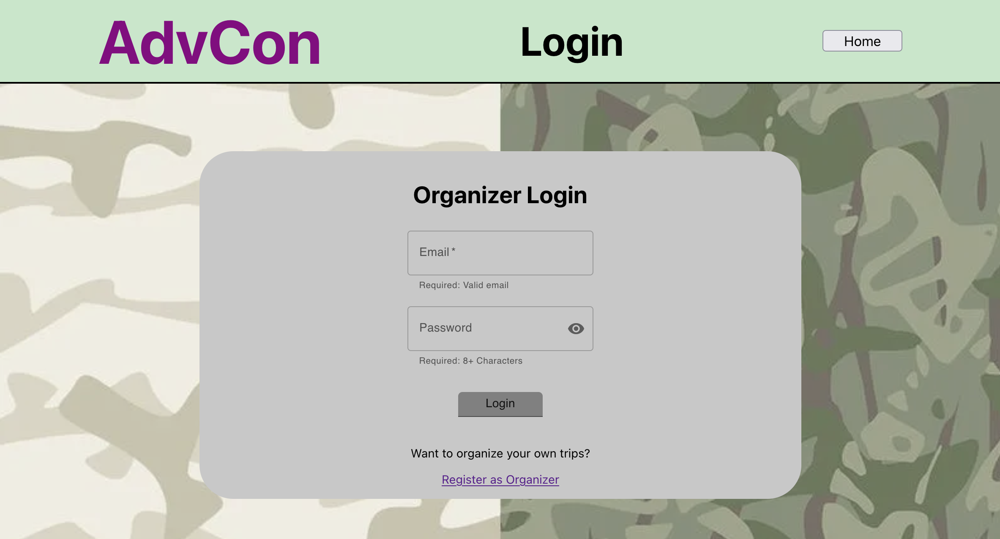
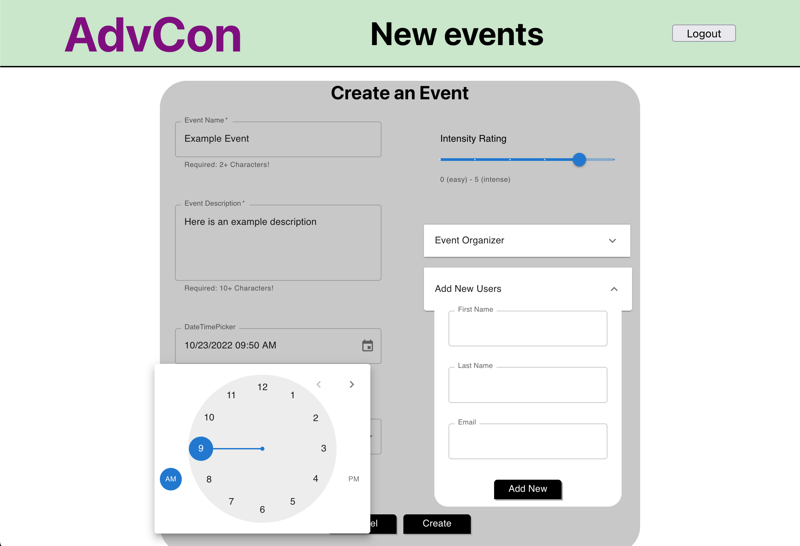
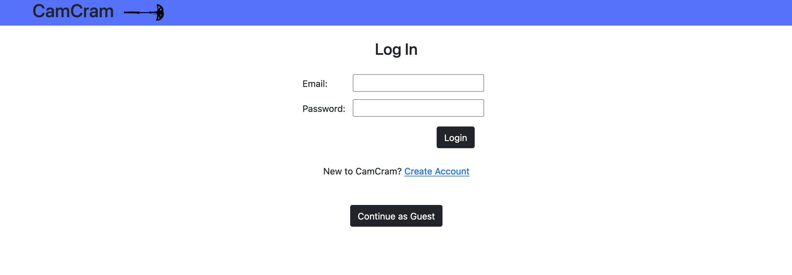
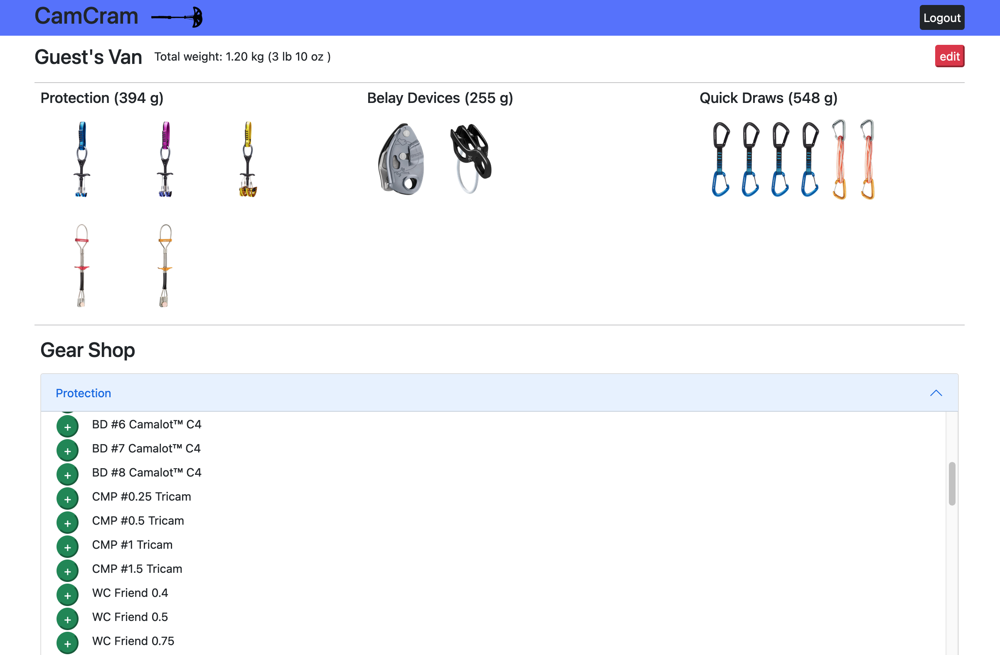
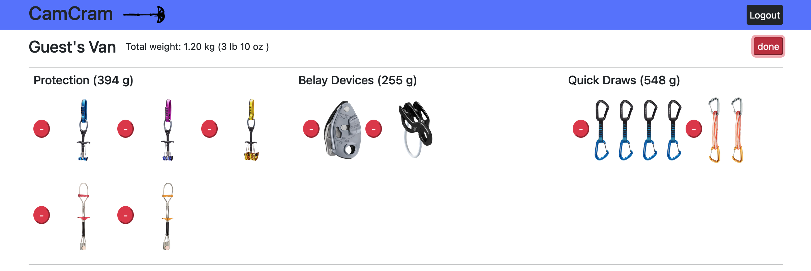

SCQuorum
Github DeploymentSupreme Court Quorum is a platform designed to give users the ability to easily access and read primary source documents in a user friendly environment.
| Technology | |
|---|---|
| Languages | Python |
| Frameworks | Flask, Jinja2, Bootstrap |
| Database | MySQL |
| Deployment | AWS Ubuntu EC2 running Gunicorn, Nginx |
To begin, users create an account with full login/registration functionality
Next, users can view their Library. This is where you can keep track of posts, notes, and a list of the documents you are currently reading.
The archives section is where users come to search for Supreme Court opinions to read.
Similar to most social media sites, on the Friends Tab you can connect with other users, view your own friends, and respond to requests.
Finally, the Quorum is where you can view the posts from all your friends.

Adventure Connect
Github DeploymentAdventure Connect is an application for users within the Pacific NorthWest to create, arrange, and join outdoor activities.
| Technology | |
|---|---|
| Languages | TypeScript |
| Frameworks | Node.js, React, Express, Mongoose |
| Database | MongoDB Atlas |
| Deployment | Vercel CI/CD Pipeline |
The home page shows a running list of local outdoor events.
If interested, a user can view the event for more specific details. To join, users can contact the event organizer, who manages the participants list.
An account is not necessary for users to join events. However, users can register for an organizer account if they would like to plan their own events.
Once logged in, organizers have the option to create a new event, and can provide details such as activity type, description, and intensity.
CamCram
Github Deployment| Technology | |
|---|---|
| Languages | Java |
| Frameworks | Spring Boot, JSP, JPA |
| Database | MySQL |
| Deployment | AWS Ubuntu EC2 running Apache2 |
Create an account to begin tracking your collection of climbing gear.
Once logged in, climbers can add gear to their van. Check out the wide selection of gear shown in the gear shop! Simply click "+" to add a gear object to your van.
Click the remove toggle for the option to remove gear from your van.
